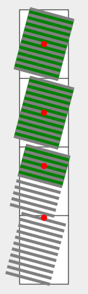
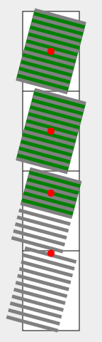

◎
This module describes the fragmentation model that partitions a flow into pages, columns, or regions. It builds on the Page model module and introduces and defines the fragmentation model. It adds functionality for pagination, breaking variable fragment size and orientation, widows and orphans.
次の特色機能は
~risk下
にあり、勧告候補の期間内に取下げられるかもしれません：
◎
The following features are at-risk, and may be dropped during the CR period:
`break-*$p ~propの
`region$v, `avoid-region$v 値。
◎
the region and avoid-region values of break-*
Breaking the Web, one fragment at a time
1. 序論
~INFORMATIVE
連続的~媒体
とは対照的に，頁d媒体（紙, OHP, 写真アルバム頁, 印刷出力の模倣として~computer~screenに表示される頁，など）においては、文書の内容を いくつかの別個の表示面に分割する。
見苦しい分断（~text行lの中途など）を避けるため、~layout~engineは，内容における頁~分断の~~位置を適当にずらさ~MUST。
この処理は
`頁割@
と呼ばれる。
◎
In paged media (e.g., paper, transparencies, photo album pages, pages displayed on computer screens as printed output simulations), as opposed to continuous media, the content of the document is split into one or more discrete display surfaces. In order to avoid awkward breaks (such as halfway through a line of text), the layout engine must be able to shift around content that would fall across the page break. This process is called pagination.
◎
In CSS, in addition to paged media, certain layout features such as regions [CSS3-REGIONS] and multi-column layout [CSS3COL] create a similarly fragmented environment. The generic term for breaking content across containers is fragmentation. This module explains how content breaks across fragmentation containers (fragmentainers) such as pages and columns and how such breaks can be controlled by the author.
1.1. ~module間の相互作用
この~moduleは、
`CSS21$r
13.3 節
および
`CSS3PAGE$r
にて定義される頁割~制御を置換し, 拡張する。
◎
This module replaces and extends the pagination controls defined in [CSS21] section 13.3 and in [CSS3PAGE].
`断片化d~flow$のある部分（またはすべて）を包含する， 1 個の~box
— `頁~box$, `柱~box$, `~region$ など。
断片容器は、定義済みであるか, または 必要に応じて生成される。
分断-可能な内容が断片容器の塊~次元を~overflowするときには、代わりに
その`断片化~文脈$における次の容器の中へ分断する。
◎
A box—such as a page box, column box, or region—that contains a portion (or all) of a fragmented flow. Fragmentainers can be pre-defined, or generated as needed. When breakable content would overflow a fragmentainer in the block dimension, it breaks into the next container in its fragmentation context instead.
`断片化~文脈@ （ `fragmentation context^en ）
順序付けられた一連の`断片容器$
— 例えば，［
`複柱~容器$ ／
`~region連鎖$ `CSS3-REGIONS$r ／
頁d媒体~表示
］により作成されるものなど。
所与の`断片化~文脈$における`塊~flow方向$は，そのすべての`断片容器$に渡って一定になる。
（`断片化~根$の子孫の塊~flow方向は他になり得るが、断片化は，`断片化~根$に適用された塊~flow方向に従って~~進行する。）
◎
An ordered series of fragmentainers, such as created by a multi-column container, a chain of CSS regions, or a paged media display. A given fragmentation context can only have one block flow direction across all its fragmentainers. (Descendants of the fragmentation root may have other block flow directions, but fragmentation proceeds according to the block flow direction applied to the fragmentation root.)
`断片化d~flow@ （ `fragmented flow^en ）
`断片化~文脈$の下で~lay-outされる内容。
`断片化d~flow$は、
`断片化~根@
と呼ばれる~box（匿名も含む）の内容からなる。
◎
Content that is being laid out in a fragmentation context. The fragmented flow consists of the content of a (possibly anonymous) box called the fragmentation root.
`断片化~方向@ （ `fragmentation direction^en ）
`断片化~文脈$の`塊~flow方向$。
すなわち，内容が断片化されていく方向（この~levelの CSS においては、内容は一方の次元にのみ断片化される。）
◎
The block flow direction of the fragmentation context, i.e. the direction in which content is fragmented. (In this level of CSS, content only fragments in one dimension.)
`断片化@ （ `fragmentation^en ）
`断片化~文脈$を成す一連の`断片容器$に内容~flowを分割する処理。
◎
The process of splitting a content flow across the fragmentainers that form a fragmentation context.
`~box断片@ または `断片@ （ `fragment^en ）
~boxの中で， 1 個の`断片容器$が占める部分。
連続的~flowの下での~boxは、常に，唯 1 個の断片からなる。
断片化d~flowの下での 1 個の~boxは、1 個以上の断片からなる。
~boxの［
~border, ~padding, ~margin
］は、それぞれの断片ごとに，それらの区画も込みであてがわれる（断片化がこれらにどう影響するかの制御については、 `box-decoration-break$p を見よ）。
◎
The portion of a box that belongs to exactly one fragmentainer. A box in continuous flow always consists of only one fragment. A box in a fragmented flow consists of one or more fragments. Each fragment has its own share of the box’s border, padding, and margin, and therefore has its own padding area, border area, and margin area. (See box-decoration-break, which controls how these are affected by fragmentation.)
`残りの断片容器~塊~size@
`断片容器$の中で、所与の要素に残されている，`塊-軸$にて可用な空間。
すなわち，`断片容器$において要素に先行する内容の終端と, `断片容器$の終端~辺の合間。
◎
The remaining block-axis space in the fragmentainer available to a given element, i.e. between the end of preceding content in fragmentainer and the edge of the fragmentainer.
`断片化~分断@
（以下，単に
分断（ `break^en ）
と称する）は、現在の`断片容器$内に~lay-outされる~boxを終端させ，断片化する。
~boxの残りの内容は、次の`断片容器$の中に~lay-outされる。
その場合、必要なら先送りされた内容を保持するために，新たな`断片容器$が生成されることもある。
◎
Each fragmentation break (hereafter, break) ends layout of the fragmented box in the current fragmentainer and causes the remaining content to be laid out in the next fragmentainer, in some cases causing a new fragmentainer to be generated to hold the deferred content.
注記：
`行内~内容$を 一連の行lへ分断すること【 “改行” 】は，別の形の断片化であり、
`行内~box$を 一連の`行l~box$に分断するときに，上述と同様に 一連の~box断片を作成する。
しかしながら、行内の分断-法については，この仕様では~~扱わない。
`CSS21$r ／ `CSS3TEXT$r を見よ。
◎
Breaking inline content into lines is another form of fragmentation, and similarly creates box fragments when it breaks inline boxes across line boxes. However, inline breaking is not covered here; see [CSS21]/[CSS3TEXT].
2.1. 並行する断片化~flow
複数の`整形~文脈$が互いに並行して~lay-outされる下では、断片化は，各~整形~文脈ごとに独立に行われる。
例えば，要素が浮動されている場合、浮動体の内側にある`強制~分断$は，（浮動体の`塊~size$を増大させ得ることを除いて）浮動体の外側の内容の~layoutには，影響しないことになる。
~UAは、互いに並行する整形~文脈~内の`非強制~分断$の配置を調整して，横並びになる内容を視覚的に整えてもよい
— `強制~分断$に対しては、そのように調整してはならない。
◎
When multiple formatting contexts are laid out parallel to each other, fragmentation is performed independently in each formatting context. For example, if an element is floated, then a forced break inside the float will not affect the content outside the float (except insofar as it may increase the height of the float). UAs may (but are not required to) adjust the placement of unforced breaks in parallel formatting contexts to visually balance such side-by-side content, but must not do so to match a forced break.
それぞれが独立に内容を断片化するような，並行する~flowの例には、次が挙げられる：
◎
The following are examples of parallel flows whose contents will fragment independently:
浮動体の内容と, その周囲を取り巻く内容。
◎
The contents of a float vs. the content wrapping outside the float.
浮動体の内容と, それに隣接する浮動体の内容。
◎
The contents of a float vs. the contents of an adjacent float.
単独の~table~rowにおける各~table~cellの内容。
◎
The contents of each table cell in a single table row.
単独の格子~rowにおける各~格子~駒の内容。
◎
The contents of each grid item in a single grid row.
~flex~layoutの~rowにおける各~flex駒の内容。
◎
The contents of each flex item in a flex layout row.
各 絶対位置された要素の，内容
— それらの`包含塊$の`断片化~文脈$が同じ範囲を覆うような。
◎
The contents of absolutely-positioned elements that cover the same range of their containing block’s fragmentation context.
固定~sizeにされた~boxの内容~辺を~overflowする内容は、その~boxに後続する内容に並行するものと見なされ，通常の 断片化~規則に従う。
~overflowする内容は，`断片化~根$~boxの~sizeには影響しないが、`断片化d~flow$の長さを増大させ，必要に応じて溢れるか追加の`断片容器$を生成させる。
◎
Content overflowing the content edge of a fixed-size box is considered parallel to the content after the fixed-size box and follows the normal fragmentation rules. Although overflowing content doesn’t affect the size of the fragmentation root box, it does increase the length of the fragmented flow, spilling into or generating additional fragmentainers as necessary.
2.2. 入子にされた断片化~flow
`断片容器$ `F^V の分断-法は、実質的に， `F^V を 2 つの`断片容器$
`F1^V, `F2^V
に分割する。
唯一の相違は、`断片容器$ `F^V の内容に関して
`F1^V, `F2^V
の間の`分断の型$が，通常通りに `F^V 自身の`断片化~文脈$により作成されるものではなく，
`F^V を分割する`断片化~文脈$に基づくことである。
◎
Breaking a fragmentainer F effectively splits the fragmentainer into two fragmentainers (F1 and F2). The only difference is that, with regards to the content of fragmentainer F, the type of break between the two pieces F1 and F2 is the type of break created by the fragmentation context that split F, not the type of break normally created by F’s own fragmentation context.
例えば、~region~boxが頁~境界で分断された場合、その~regionの内容は，その地点で頁~分断から影響されることになる（が、~region分断からは影響されない）。
◎
For example, if a region box is broken at a page boundary, then the content of the region will be affected by a page break at that point (but not by a region break).
注記：
`複柱~容器$が何~頁かに分断されるときは、［
`複柱~容器$の中の頁~分断が常に，頁~分断かつ柱~分断になる
］ように、次~頁~以降に［
残りの内容~用に，新たな［
柱たちからなる~row
］］を生成する。
◎
Note that when a multi-column container breaks across pages, it generates a new row of columns on the next page for the rest of its content, so that a page break within a multi-column container is always both a page break and a column break.
3. 分断の制御-法
以下の節では、`断片化d~flow$において分断を制御する方法を説明する。
2 つの~boxの合間にある［
頁／柱／~region
］分断~機会は、その`包含塊$の［
`break-inside$p ~prop,
先行する要素の `break-after$p ~prop,
後続する要素の `break-before$p ~prop
］の影響下に置かれる。
2 つの行l~boxの合間にある［
頁／柱／~region
］分断~機会は、その`包含塊$の［
`break-inside$p, `widows$p, `orphans$p
］~propの影響下に置かれる。
`分断$は、これらの~propの値に依存して，［
許容-／強制-／抑制-
］され得る。
強制~分断は、その分断点に作用するような どの分断~制約も上書きする。
強制~頁~分断の場合、作者は，［
後続の内容が 頁のいずれの側（
左~頁または右~頁
）から再開されるべきであるか
］を指定できる。
◎
The following sections explain how breaks are controlled in a fragmented flow. A page/column/region break opportunity between two boxes is under the influence of the containing block’s break-inside property, the break-after property of the preceding element, and the break-before property of the following element. A page/column/region break opportunity between line boxes is under the influence of the containing block’s break-inside, widows, and orphans properties. A fragmentation break can be allowed, forced, or discouraged depending on the values of these properties. A forced break overrides any break restrictions acting at that break point. In the case of forced page breaks, the author can also specify on which page (left or right) the subsequent content should resume.
これらの~propが断片化にどのように影響するかについての
正確な規則については、分断-法のための規則節に。
◎
See the section on rules for breaking for the exact rules on how these properties affect fragmentation.
これらの~propは、生成された~boxの前後における［
頁／柱／~region
］分断の挙動を指定する。
`分断強制~値@
［
`left$v,
`right$v,
`recto$v,
`verso$v,
`page$v,
`column$v,
`region$v
］は、~flowにおける`強制~分断$を作成する一方、
`分断回避~値@
［
`avoid$v0,
`avoid-page$v0,
`avoid-column$v0,
`avoid-region$v0
］は、前後の内容が一緒に保たれるべきであることを指示する。
◎
These properties specify page/column/region break behavior before/after the generated box. The forced break values left, right, recto, verso, page, column and region create a forced break in the flow while the avoid break values avoid, avoid-page, avoid-column and avoid-region indicate that content should be kept together.
`break-before$p ／ `break-after$p
用の各種 値は、以下の下位節にて定義される。
~UAは、これらの~propを，`断片化~根$の通常flowの中の~boxに適用し~MUST。
また、［
`包含塊$が断片化された根~要素の通常flowの中にあるような，浮動~box
］にも適用するべきである。
~UAは、これらの~propを，他の~boxに適用しても~MAY。
◎
Values for break-before and break-after are defined in the sub-sections below. User Agents must apply these properties to boxes in the normal flow of the fragmentation root. User agents should also apply these properties to floated boxes whose containing block is in the normal flow of the root fragmented element. User agents may also apply these properties to other boxes.
以下に挙げる値は、［
当の~flowを包含している`断片化~文脈$
］の型に関わらず，効果を及ぼす。
◎
These values have an effect regardless of the type of fragmented context containing the flow.
`auto@v
`主要~box$の前／後における分断を，強制-も禁止-もしない。
◎
Neither force nor forbid a break before/after the principal box.
`avoid@v
`主要~box$の前／後における分断を，避ける。
◎
Avoid a break before/after the principal box.
各種 頁~分断~値
以下に挙げる値の効果は、頁割された文脈に限られる
— 他の文脈~下の~flowには、効果はない。
◎
These values only have an effect in paginated contexts; if the flow is not paginated, they have no effect.
`avoid-page@v
`主要~box$の前／後における頁~分断を，避ける。
◎
Avoid a page break before/after the principal box.
`page@v
`主要~box$の前／後における頁~分断を，常に強制する。
◎
Always force a page break before/after the principal box.
`left@v
`主要~box$の前／後において，
1 〜 2 個の頁~分断を強制して、次の頁が左~頁として整形されるようにする。
◎
Force one or two page breaks before/after the principal box so that the next page is formatted as a left page.
`right@v
`主要~box$の前／後において，
1 〜 2 個の頁~分断を強制して、次の頁が右~頁として整形されるようにする。
◎
Force one or two page breaks before/after the principal box so that the next page is formatted as a right page.
`recto@v
`主要~box$の前／後において，
1 〜 2 個の頁~分断を強制して、次の頁が［
左~頁, 右~頁
のうち（`頁~進行$に従って）頁~見開きの後半~頁
］として整形されるようにする。
◎
Force one or two page breaks before/after the principal box so that the next page is formatted as either a left page or a right page, whichever is second (according to the page progression) in a page spread.
`verso@v
`主要~box$の前／後において，
1 〜 2 個の頁~分断を強制して、次の頁が［
左~頁, 右~頁
のうち（`頁~進行$に従って）頁~見開きの前半~頁
］として整形されるようにする。
◎
Force one or two page breaks before/after the principal box so that the next page is formatted as either a left page or a right page, whichever is first (according to the page progression) in a page spread.
各種 柱~分断~値
以下に挙げる値の効果は、複柱~文脈に限られる
— 他の文脈~下の~flowには、効果はない。
◎
These values only have an effect in multi-column contexts; if the flow is not within a multi-column context, they have no effect.
`avoid-column@v
`主要~box$の前／後における柱~分断を，避ける。
◎
Avoid a column break before/after the principal box.
`column@v
`主要~box$の前／後における柱~分断を，常に強制する。
◎
Always force a column break before/after the principal box.
各種 ~region分断~値
以下に挙げる値の効果は、複region文脈に限られる
—
複数~regionに渡って~linkされていない~flowには、効果はない。
◎
These values only have an effect in multi-region contexts; if the flow is not linked across multiple regions, these values have no effect.
`avoid-region@v
`主要~box$の前／後における~region分断を，避ける。
◎
Avoid a region break before/after the principal box.
`region@v
`主要~box$の前／後における~region分断を，常に強制する。
◎
Always force a region break before/after the principal box.
3.1.1. 子から親への分断の伝播
分断は、同胞~boxの合間にのみ許容され，~boxとその容器の合間には許容されないので（`アリな分断点$を見よ）、親の［
始端／終端
］にある子に適用される分断~値は，親へ
`伝播-@
される
— 効果を及ぼし得る所では。
◎
Since breaks are only allowed between siblings, not between a box and its container (see Possible Break Points), break values applied to children at the start/end of a parent are propagated to the parent, where they can take effect.
特定的には
— 並替えや並列的な~layoutを織り込むために，より特有の規則を定義する~layout~modeを除いて（例：
~flex~layout
`CSS-FLEXBOX-1$r,
格子~layout
`CSS-GRID-1$r
） —
`~flow内$にある［
最初の／最後の
］子~box上の［
`break-before$p ／ `break-after$p
］値は、その容器へ`伝播-$する。
（互いに競合する値の組合せは、下に定義される。）
この伝播は、それが［
最も近くに合致する`断片化~文脈$
］の所までになる。
◎
Specifically—except in layout modes which define more specific rules to account for reordering and parallel layout (e.g. in flex layout [CSS-FLEXBOX-1] or grid layout [CSS-GRID-1])—a break-before value on a first in-flow child box is propagated to its container. Likewise a break-after value on a last in-flow child box is propagated to its container. (Conflicting values combine as defined below.) This propagation stops before it breaks through the nearest matching fragmentation context.
分断の`伝播$は、`算出値$には影響しない
— それは、要素の算出値を~layout用に解釈する一部を成す。
◎
Break propagation does not affect computed values; it is part of interpeting the elements’ computed values for layout.
3.2. ~box内での分断： `break-inside$p ~prop
◎名 `break-inside@p
◎値
`auto$v0 | `avoid$v0 | `avoid-page$v0 | `avoid-column$v0 | `avoid-region$v0
◎初 `auto$v0
◎適
通常~flowに属する要素のうち，［
整形~文脈を確立するもの／
`塊~容器$／
~table~row~group／
~table~row
］
◎
elements in the normal flow that establish formatting contexts, or that are block containers, table row groups, or table rows
◎継 されない
◎百 受容しない
◎算 指定値
◎順 文法に従う
◎ア 離散的
◎表終
この~propは、要素の`主要~box$内における［
頁／柱／~region
］分断の挙動を指定する。
各種 値は、次を意味する：
◎
This property specifies page/column/region break behavior within the element’s principal box. Values have the following meanings:
`auto@v0
`主要~box$内の分断-法に追加の拘束を課さない。
◎
Impose no additional breaking constraints within the box.
`avoid@v0
`主要~box$内での分断を，避ける。
◎
Avoid breaks within the box.
`avoid-page@v0
`主要~box$内での頁~分断を，避ける。
◎
Avoid a page break within the box.
`avoid-column@v0
`主要~box$内での柱~分断を，避ける。
◎
Avoid a column break within the box.
`avoid-region@v0
`主要~box$内での~region分断を，避ける。
◎
Avoid a region break within the box.
［
`orphans$p／`widows$p
］~propは、`塊~容器$~内の`分断$において，その［
前／後
］に［
`断片$内に残さなければならない最小の行l~box数
］を指定する。
後述にて、これらを利用して`分断$を制御する例を与える。
◎
The orphans property specifies the minimum number of line boxes in a block container that must be left in a fragment before a fragmentation break. The widows property specifies the minimum number of line boxes of a block container that must be left in a fragment after a break. Examples of how they are used to control fragmentation breaks are given below.
`orphans$p, `widows$p の値には、正~整数のみ許容される。
負数や 0 は無効であり、宣言は
無視
され~MUST。
◎
Only positive integers are allowed as values of orphans and widows. Negative values and zero are invalid and must cause the declaration to be ignored.
塊が `widows$p ／ `orphans$p の値より少ない行l数を包含する場合、単に，［
塊~内のすべての行lが一緒に保たれなければならない
］とする規則に変わる。
◎
If a block contains fewer lines than the value of widows or orphans, the rule simply becomes that all lines in the block must be kept together.
CSS Level 2
との互換性のため、
`CSS21$r に適合する~UAは，［
`page-break-before$p ／
`page-break-after$p ／
`page-break-inside$p
］~propを［
`break-before$p ／
`break-after$p ／
`break-inside$p
］の別名として扱う
— すなわち，次の表に与える値の対応関係の下で、各種 `page-break-*^p ~propを，対応する `break-*^p ~prop用の略式~propとして扱わ~MUST：
◎
For compatibility with CSS Level 2, UAs that conform to [CSS21] must alias the page-break-before, page-break-after, and page-break-inside properties to break-before, break-after, and break-inside by treating the page-break-* properties as shorthands for the break-* properties with the following value mappings:
`断片化d~flow$は、いくつもの`アリな分断点$で，一連の`断片容器$に分断され得る。
`強制~分断$に対しては、~UAには，その地点で~flowを分断することが要求される。
`非強制~分断$に対しては、~UAは，アリな分断のうち，許容されるものを選ぶ必要がある。
◎
A fragmented flow may be broken across fragmentainers at a number of possible break points. In the case of forced breaks, the UA is required to break the flow at that point. In the case of unforced breaks, the UA has to choose among the possible breaks that are allowed.
進行を保証するため、どの`断片容器$も，［
その使用~sizeに関わらず，`塊~size$は 1px 以上ある
］ものと見做される。
◎
To guarantee progress, fragmentainers are assumed to have a minimum block size of 1px regardless of their used size.
4.1. アリな分断点
断片化は、塊~flow次元において，~boxを分割する。
［
塊／行内
］~flowにおける分断は、以下に挙げる所で生じ得る：
◎
Fragmentation splits boxes in the block flow dimension. In block-and-inline flow, breaks may occur at the following places:
`A類~分断点@
以下に挙げる型の，互いに同胞の~boxの合間：
◎
Between sibling boxes of the following types:
◎
When the block flow direction of the siblings' containing block is parallel to that of the fragmentation context: in-flow block-level boxes, a float and an immediately-adjacent in-flow or floated box, table row group boxes, table row boxes, multi-column column row boxes.
◎
When the block flow direction of the siblings' containing block is perpendicular to that of the fragmentation context: table column group boxes, table column boxes, multi-column column boxes.
`B類~分断点@
`塊~容器$~boxの内側にある，2 本の［ 行l~box ］の合間
◎
Between line boxes inside a block container box.
`C類~分断点@
`塊~容器$~boxの［［
内容~辺
］と［
子~内容の外縁~辺
］］の合間
— ただし，それらの間隙が 0 でない場合に限る。
外縁~辺とは、子が［
`塊~level$ならば その~margin辺 ／
`行内~level$ならば その行l~box辺
］を指す。
◎
Between the content edge of a block container box and the outer edges of its child content (margin edges of block-level children or line box edges for inline-level children) if there is a (non-zero) gap between them.
注記：
これら各~類の分断点の間には，~~固有の優先順位は無い。
しかしながら、個々の分断点は，`分断-法の制御$を利用して，優先順位が
付与される／解除される
ことがある。
◎
There is no inherent prioritization among these classes of break points. However, individual break points may be prioritized or de-prioritized by using the breaking controls.
注記：
他の~layout~modelは、上述の各~類の分断点を追加し得る。
例えば、 `CSS-FLEXBOX-1$r は，~flex整形~文脈における一定の地点を［
`A類~分断点$ ／ `C類~分断点$
］として追加する。
◎
Other layout models may add breakpoints to the above classes. For example, [CSS-FLEXBOX-1] adds certain points within a flex formatting context to classes A and C.
断片化できない内容もある
— 例えば，［
多くの型の`置換~要素$（画像や動画など）,
~scroll~~可能な要素,
~text内容の単独の行l
］など。
その種の内容は
`単体的@
と見なされ、アリな分断点を包含しない。
したがって、そのような~boxの中の強制~分断は~boxを分割できず、~boxの自前の断片化~文脈からは，無視され~MUST。
◎
Some content is not fragmentable, for example many types of replaced elements [CSS21] (such as images or video), scrollable elements, or a single line of text content. Such content is considered monolithic: it contains no possible break points. Any forced breaks within such boxes therefore cannot split the box, and must therefore also be ignored by the box’s own fragmentation context.
◎
In addition to any content which is not generally fragmentable, UAs may consider as monolithic any elements with overflow set to auto or scroll and any elements with overflow: hidden and a non-auto logical height (and no specified maximum logical height).
行l~boxは，`アリな分断点$を包含しないので、新たな`整形~文脈$を確立するような`行内~level$の`表示型$（ `inline-block$v, `inline-table$v など）も，`単体的$と見なされる。
◎
Since line boxes contain no possible break points, inline-block and inline-table boxes (and other inline-level display types that establish a new formatting context) may also be considered monolithic.
4.2. 分断の型
CSS においては、種々の分断~型が，それらが~spanする`断片容器$の型に基づいて定義される：
◎
There are different types of breaks in CSS, defined based on the type of fragmentainers they span:
`頁~分断@
2 つの`頁~box$の合間にある分断。
`CSS3PAGE$r
◎
A break between two page boxes. [CSS3PAGE]
`見開き分断@
対向~頁
にされていないような， 2 つの頁~boxの合間にある分断。
見開き分断は、頁~分断でもある。
`CSS3PAGE$r
◎
A break between two page boxes that are not associated with facing pages. A spread break is always also a page break. [CSS3PAGE]
`柱~分断@
2 本の`柱~box$の合間にある分断。
これらの~boxが異なる頁~上に在る場合、分断は`頁~分断$にもなることに注意。
同様に，~boxが異なる~regionに在る場合、分断は`~region分断$にもなる。
`CSS3COL$r
◎
A break between two column boxes. Note that if the column boxes are on different pages, then the break is also a page break. Similarly, if the column boxes are in different regions, then the break is also a region break. [CSS3COL]
`~region分断@
2 つの`~region$の合間にある分断。
これらの~boxが異なる頁~上にある場合、分断は`頁~分断$にもなることに注意。
`CSS3-REGIONS$r
◎
A break between two regions. Note that if the region boxes are on different pages, then the break is also a page break. [CSS3-REGIONS]
注記：
分断~型には他にも、 2 本の
行l~box
に分断する
`行l分断@
【 “改行” 】もあるが、この仕様では~~扱わない。
`CSS21$r, `CSS3TEXT$r
を見よ。
◎
A fifth type of break is the line break, which is a break between two line boxes. These are not covered in this specification; see [CSS21] [CSS3TEXT].
4.3. 強制~分断
`強制~分断@
は、~stylesheet作者により明示的に指示される分断である。
`強制~分断$は、［［
先行の同胞~boxに［
指定される／`伝播-$される
］ `break-after$p ~prop
］, または［
~~後続の同胞~boxに［
指定される／`伝播-$される
］ `break-before$p ~prop
］のうち，少なくとも一方が`分断強制~値$をとる場合に、`A類~分断点$にて生じる。
（したがって，この`分断強制~値$は、実質的に，同じ分断点に適用されるどの`分断回避~値$も上書きする。）
◎
A forced break is one explicitly indicated by the style sheet author. A forced break occurs at a class A break point if, among the break-after properties specified on or propagated to the earlier sibling box and the break-before properties specified on or propagated to the later sibling box there is at least one with a forced break value. (Thus a forced break value effectively overrides any avoid break value that also applies at that break point.)
単独の分断点に，複数の`分断強制~値$が適用されるときには、それらの分断~型すべてが尊守されるように，組合わされる。
［
`left$v,
`right$v,
`recto$v,
`verso$v
］が組合わされたときは、~flowの中で最も末尾側の要素に指定された値が，優先される。
◎
When multiple forced break values apply to a single break point, they combine such that all types of break are honored. When left, right, recto, and/or verso are combined, the value specified on the latest element in the flow wins.
注記：
強制~頁~分断は、［
この~margin【どの？】の直前と直後の行l~boxが， 同じ `page$p ~prop値をとらない
］場合には，`A類~分断点$にも生じ~MUST。
`CSS3PAGE$r
を見よ。
◎
A forced page break must also occur at a class A break point if the last line box above this margin and the first one below it do not have the same value for page. See [CSS3PAGE]
強制~分断が生じる場合、内容が［
その分断に結び付けられている型の，次の`断片容器$
］の中に入る様に強制する
— 指定された分断~型がすべて満たされるまで，必要なだけ`断片化~文脈$の入子階層を遡って。
合致する型の`断片化~文脈$に包含されない強制~分断には、効果はない。
◎
When a forced break occurs, it forces ensuing content into the next fragmentainer of the type associated with the break, breaking through as many fragmentation contexts as necessary until the specified break types are all satisfied. If the forced break is not contained within a matching type of fragmentation context, then the forced break has no effect.
4.4. 非強制~分断
`分断-法の制御$は、分断を強制できるのみならず，抑制することもできる。
`非強制~分断@
とは、内容が`断片容器$を~overflowしないように，~UAにより自動的に挿入される分断である。
`アリな分断点$にて，非強制~分断-法が許容されるかどうかは、次の規則により制御される：
◎
While breaking controls can force breaks, they can also discourage them. An unforced break is one that is inserted automatically by the UA in order to prevent content from overflowing the fragmentainer. The following rules control whether unforced breaking at a possible break point is allowed:
◎
A fragmented flow may break at a class A break point only if all the break-after and break-before values applicable to this break point allow it, which is when at least one of them forces a break or when none of them forbid it (avoid or avoid-page/avoid-column/avoid-region, depending on the break type).
◎
Breaking at a class B break point is allowed only if the number of line boxes between the break and the start of the enclosing block box is the value of orphans or more, and the number of line boxes between the break and the end of the box is the value of widows or more.
規則 4
加えて，［
`B類~分断点$ ／`C類~分断点$
］においては、［
どの先祖も，その `break-inside$p の値は `auto$v0
］の場合に限り，分断が許容される。
◎
Additionally, breaking at class B or class C break points is allowed only if the break-inside property of all ancestors is auto.
上の拘束により，［［
内容が`断片容器$から~overflowしない
］ように保つに十分な分断点
］が供されない場合、更に分断点を供するため，規則 3 が外される
◎
If the above doesn’t provide enough break points to keep content from overflowing the fragmentainer, then rule 3 is dropped to provide more break points.
それでも，分断点が不足なら、追加の分断点を見出すために，規則 1, 2, 4 が外される。
この場合、~UAは，新たな分断点の適切さを~~評価するために，［
それらの地点に効果を及ぼす `avoid^v
］を利用して~MAY。
しかしながら、この仕様は，その精確な~algoについては示唆しない。
◎
If that still does not lead to sufficient break points, then rules 1, 2 and 4 are dropped in order to find additional breakpoints. In this case the UA may use the avoids that are in effect at those points to weigh the appropriateness of the new breakpoints; however, this specification does not suggest a precise algorithm.
それでもまだ，分断点が不足なら、`複製0された$［
~margin／~border／~padding
］の塊-終端 側が切落され、それでも不足なら，その塊-始端†側も切落される。
【† 原文 “塊-終端” はおそらく誤記】
◎
If even that does not lead to sufficient break points, cloned margins/border/padding at on the block-end side are truncated; and if more room is still needed, cloned margins/border/padding are truncated at the block-end side as well.
最終的に、［
`断片容器$の始めから終わりまでアリな分断点が無い, かつ
内容すべてが`断片容器$に収まり切らない
］場合には、~UAは，`断片容器$の辺から内容がはみ出ないように，任意の所で分断して~MAY。
そのような場合、~UAは，`単体的$な要素の~graphic表現を断片に切分けて，その内容を断片化しても~MAY。
しかしながら、~UAは，頁の上端の所で分断しては~MUST_NOT
— すなわち，内容の進行を保証するため、どの`断片容器$にも，少なくとも何らかの内容を配置し~MUST。
◎
Finally, if there are no possible break points below the top of the fragmentainer, and not all the content fits, the UA may break anywhere in order to avoid losing content off the edge of the fragmentainer. In such cases, the UA may also fragment the contents of monolithic elements by slicing the element’s graphical representation. However, the UA must not break at the top of the page, i.e. it must place at least some content on each fragmentainer, so that each fragmentainer has a non-zero amount of content, in order to guarantee progress through the content.
4.5. 非強制~分断の最適化-法
CSS3 は、`断片化d~flow$が［
`断片化~文脈$における`断片容器$の~overflowを避けるため，許容される分断点にて分断し~MUST
］ことを要求するが、特定0の `許容される分断$にて内容を分断するかどうかは定義しない。
しかしながら、 ~UAには，次の指針を順守することが推奨される（それらは矛盾も孕んでいることを認識した上で）：
◎
While CSS3 requires that a fragmented flow must break at allowed break points in order to avoid overflowing the fragmentainers in its fragmentation context, it does not define whether content breaks at a particular allowed break. However, it is recommended that user agents observe the following guidelines (while recognizing that they are sometimes contradictory):
分断はなるべく少なくする。
◎
Break as few times as possible.
強制~分断で終端しないような，すべての`断片容器$は、等量の内容で埋まるように現れさせる。
◎
Make all fragmentainers that don’t end with a forced break appear to be equally filled with content.
`置換~要素$の内側では、分断するのを避ける。
◎
Avoid breaking inside a replaced element.
例えば，~stylesheetに
`orphans^p: `4^v,
`widows^p: `2^v
が含まれていて,
現在の頁の下端に 20 行l（行l~box）分の可用な空間があり,
通常flowにおいて， `N^V 本の行l~boxを包含する塊をその次に配置することを考える：
◎
Suppose, for example, that the style sheet contains orphans : 4, widows : 2, and there is space for 20 lines (line boxes) available at the bottom of the current page, and the next block in normal flow is considered for placement:
`N^V ≤ 20 の場合、【塊は断片化されずに】現在の頁~上に置かれるべきである。
◎
If the block contains 20 line boxes or fewer, it should be placed on the current page.
`N^V ＝ 21 または 22 の場合、段落の 2 個目の断片は `widows$p の拘束に違反してはならないので、 2 個目の断片は，少なくとも 2 本の行l~boxを包含し~MUST。
同様に，最初の断片も、少なくとも 4 本の行l~boxを包含し~MUST。
◎
If the block contains 21 or 22 line boxes, the second fragment of the paragraph must not violate the widows constraint, and so the second fragment must contain at least two line boxes; likewise the first fragment must contain at least four line boxes.
`N^V ≥ 23 の場合、最初の断片が 20 行l， 2 個目の断片は残りの行lを包含するべきであるが、
現在の頁~上に置かれる 塊のどの断片も，少なくとも 4 本の行l~boxを包含し,
2 個目の断片は 少なくとも 2 本の行l~boxを包含しなければならない。
◎
If the block contains 23 line boxes or more, the first fragment should contain 20 lines and the second fragment the remaining lines. But if any fragment of the block is placed on the current page, that fragment must contain at least four line boxes and the second fragment at least two line boxes.
今度は、
`orphans$p: `10^v,
`widows$p: `20^v
にされていて，現在の頁の下端にて 8 行l分が可用とする：
◎
Now suppose that orphans is 10, widows is 20, and there are 8 lines available at the bottom of the current page:
`N^V ≤ 8 の場合、現在の頁~上に置かれるべきである。
◎
If the block contains 8 lines or fewer, it should be placed on the current page.
`N^V ≥ 9 の場合、分割されてはならないので（さもなければ `orphans$p の拘束に違反する），塊として次の頁へ移動されなければならない。
◎
If the block contains 9 lines or more, it must NOT be split (that would violate the orphans constraint), so it must move as a block to the next page.
5. 分断-法のための~box~model
注記：
この節では、 `CSS3-SIZING$r にて定義される ~sizingに関する用語を利用する。
◎
The sizing terminology used in this section is defined in [CSS3-SIZING].
5.1. ~sizeが一様でない断片容器への分断-法
~flowが，~sizeが一様でない 一連の`断片容器$に断片化されるときには、~layoutに適応するため，次の規則が順守される：
◎
When a flow is fragmented into varying-size fragmentainers, the following rules are observed for adapting layout:
要素の内在~sizeは、要素~全体に渡って，計算され, 保守される
【すなわち，断片化されないときの~sizeを用いる】
—
内在~sizeを解決するために初期~包含塊の~sizeを要するときは、`断片化~文脈$を定義している最初の`断片容器$の~sizeと見做す。
◎
Intrinsic sizes are calculated and maintained across the entire element. Where an initial containing block size is needed to resolve an intrinsic size, assume the size of the first fragmentainer defining a fragmentation context.
~layoutは、`断片容器$ごとに遂行される
—
各 `断片容器$ `C^V は、~lay-outする要素について，［
前の分断点からの要素の進捗量を継続しつつ
］， `C^V 自身の~sizeを利用して，要素~全体が［
他の`断片容器$の~sizeも `C^V と同じ~sizeにされて断片化されている
］と~~見なした下で，要素の~sizeと位置を再度~計算する。
進捗量は、［
`C^V において［
使用された／残りの
］`塊~size$が占める百分率（絶対的~長さではなく）
］で, および［
使用された／残りの
］内容の分量
］で，計測される。
ただし，`単体的$な要素を~lay-outするときには、~UAは，代わりに［
各 `断片容器$に渡り，［
`行内~size$／解決された`塊~size$
］を一貫して保守しても~MAY。
◎
Layout is performed per-fragmentainer, with each fragmentainer continuing progress from the breakpoint on the previous, but recalculating sizes and positions using its own size as if the entire element were fragmented across fragmentainers of this size. Progress is measured in percentages (not absolute lengths) of used/remaining fragmentainer extent and in amount of used/remaining content. However, when laying out monolithic elements, the UA may instead maintain a consistent inline size and resolved block size across fragmentainers.
［
前の`断片容器$から始まっている~box
］の断片は、［
それらが，【次の？】`断片容器$の`塊-始端$ 辺の上側に位置してはならない
］とする，追加の拘束を伴う配置~規則を~~順守し~MUST。
その結果，~boxの継続~断片が`断片容器$の`塊-始端$ 辺から離されることになる場合、
`box-decoration-break$p に `clone^v が指定されているならば，その断片を［
~boxの~paddingと~borderに加えて~margin
］により包装する。
◎
Fragments of boxes that began on a previous fragmentainer must obey placement rules with the additional constraint that fragments must not be positioned above the block-start edge of the fragmentainer. If this results in a box’s continuation fragment shifting away from the block-start edge of the fragmentainer, then box-decoration-break: clone, if specified, wraps the fragment with the box’s margin in addition to its padding and border.
`Varying-Size-Fragmentainers^dgm
~sizeが一様でない`断片容器$が分断される様子を示す~~図式
◎
Illustration of breaking in varying-size fragmentainers.
注記：
一連の要素の文書~順序は，断片化の間は変化しないので、各~断片は，連続的~媒体に適用される規則と同じ規則に従って処理される。
特に、浮動体の順序は，すべての断片に渡って保全され、
CSS 2.1 の 9.5 節にて定義される規則と同じ規則に従う。
◎
Since document order of elements doesn’t change during fragmentation, fragments are processed following the same rules that apply to continuous media. In particular, the order of floats is preserved across all fragments and follows the same rules as defined in CSS 2.1 9.5.
上述の規則が含意するいくつかを以下に挙げる（参考）：
◎
Below are listed (informatively) some implications of these rules:
［
`収納伸張~size$ ／百分率に基づく~size
］による~layout拘束を充足している~box（~tableも含む）は、頁~間に渡り，その`行内~size$を変化させ得る。
◎
Boxes (including tables) fullfilling layout constraints at their stretch-fit or percentage-based size may change inline size across pages.
［
`最小-内容$ ／ `最大-内容$ ／ 絶対~長さ
］~sizeによる~layout拘束を充足している~box（~tableも含む）は、頁~間に渡り，その`行内~size$を保守することになる。
◎
Boxes (including tables) fulfilling layout constraints at their min-content, max-content, or absolute-length size will maintain their inline size across pages.
`塊~level$の継続~断片は、例えば，それが［
塊~整形~文脈を確立する, かつ
浮動体の脇に置かれる, かつ
それと浮動体の両者が，横並びに置くには狭~過ぎる頁~上に継続する
］場合には、頁の始めから置かれても~MAY。
◎
A block-level continuation fragment may be placed below the top of the page if, e.g. it establishes a block formatting context and is placed beside a float and both it and the float continue onto a narrower page that is too narrow to hold both of them side-by-side.
同じ頁~上に先行する浮動体 F に隣接する要素は、例えば，［
この より狭い頁~上に継続する別の先行する浮動体 G があって，
F, G が最早，横並びに収まらないために F が下側へ追出される
］ような場合、次の頁に継続する浮動体の上側に回込むことがある。
◎
An element adjacent to a preceding float on one page may wind up above the float’s continuation on the next page if, e.g. that float is pushed down because it no longer fits side-by-side with an earlier float that also continues onto this narrower page.
左~浮動体は、先行する右~浮動体が前の頁に収まらない場合には，右~浮動体の残りの断片の 前の 頁~上に現れて~MAY。
しかしながら，他の右~浮動体は、先行する右~浮動体の残りの断片を配置し終える所まで，~~先送りされることになる。
◎
A left float may appear on a page before the remaining fragments of a preceding right float if that right float does not fit on the earlier page. However another right float will be forced down until the preceding right float’s remaining fragment can be placed.
ここに、百分率に基づいて進捗する例を示す：
絶対位置された要素があり，その位置が［
`top$p: `calc(150% + 30px)^v,
`height$p: `calc(100% - 10px)^v
］にされているとする。
要素が，縦幅が［
1 頁~目は 400px,
2 頁~目は 200px,
3 頁~目は 600px
］に頁割された文脈~下に置かれた場合、その~layoutは次の様に進捗する：
◎
Here is an example that shows the use of percentage-based progress: Suppose we have an absolutely-positioned element that is positioned top: calc(150% + 30px) and has height: calc(100% - 10px). If it is placed into a paginated context with a first page height of 400px, a second page of 200px, and a third page of 600px, its layout progresses as follows:
まず、要素の上端~位置が，1 個目の頁の縦幅に対し解決され、その結果は
630px （ ＝ 150% × 400px + 30px ）
になる。
1 個目の頁の縦幅は 400px しかないので、［
進捗量 63.49% （ ＝ 400 ÷ 630 ）； 残り 36.51%
］を記録した上で，~layoutは 2 頁~目へ移動する。
◎
First, the top position is resolved against the height of the first page. This results in 630px. Since the first page has a height of only 400px, layout moves to the second page, recording progress of 400/630 = 63.49% with 36.51% left to go.
2 個目の頁~上では、要素の上端~位置が再び
— ここでは 2 個目の —
頁の縦幅に対し解決され、その結果は 330px になる。
したがって、残りの進捗量 36.51% は， 120.5px に解決され、要素の上端~辺が，この頁の上端~辺から 120.5px 下の所に置かれる。
◎
Now on the second page, the top position is again resolved, this time against the height of the second page. This results in 330px. The remaining 36.51% of progress thus resolves to 120.5px, placing the top edge of the element 120.5px down the second page.
要素の縦幅は、 2 個目の頁に対し解決され、その結果は
190px （ ＝ 100% × 200px − 10px ）
になる。
頁~上には
79.5px （ ＝ 200px − 120.5px ）
しか残されていないので、［
進捗量 41.84% （ ＝ 79.5 ÷ 190 ）； 残り 58.16%
］を記録した上で，~layoutは 3 頁~目へ移動する。
◎
Now the height is resolved against the second page; it resolves to 190px. Since there are only 79.5px left on the page, layout moves to the third page, recording progress of 79.5/190 = 41.84%, with 58.16% left to go.
3 個目の頁~上では、縦幅は
590px （ ＝ 100% × 600px − 10px ）
に解決される。
したがって、残りの進捗量 58.16% は，この頁~上に収まる 343.1px （ ＝ 58.16% × 590px ）に解決され、要素は完了する。
◎
On the third page, the height resolves to 590px. The remaining 58.16% of progress thus resolves to 343.1px, which fits on this page and completes the element.
5.2. 分断に連接する~margin
非強制~分断による分断が，`塊~level$の~boxたちの合間に生じたときは、その分断の前に連接する~marginは，`残りの断片容器~塊~size$に切落され、後に連接する~marginは 0 に切落される。
その分断が強制~分断によるものであった場合は、分断の前に連接する~marginは切落される一方で、分断の後の~marginは保全される。
塊~levelの~boxに対しては、
`box-decoration-break$p: `clone$v
により複製0される~marginは，常に 0 に切落される。
◎
When an unforced break occurs between block-level boxes, any margins adjoining the break truncate to the remaining fragmentainer extent before the break, and are truncated to zero after the break. When a forced break occurs there, adjoining margins before the break are truncated, but margins after the break are preserved. Cloned margins are always truncated to zero on block-level margins.
5.3. ~boxの分割法
~boxを分断するときは、その分断の前の内容に対する~boxは，`残りの断片容器~塊~size$を埋めるように拡がる（ `box-decoration-break$p: `clone^v により適用される
~margin／~border／~padding
用の部屋は残す） — 内容を次の`断片容器$にて再開させる前に。
（内容を，次の`断片容器$に追出すような`分断$は、~boxの内容の`塊~size$を，実質的に増大させる。）
◎
When a box breaks, its content box extends to fill any remaining fragmentainer extent (leaving room for any margins/borders/padding applied by box-decoration-break: clone) before the content resumes on the next fragmentainer. (A fragmentation break that pushes content to the next fragmentainer effectively increases the block size of a box’s contents.)
注記：
~boxの断片化により供与される`塊~size$の増分（すなわち，分断点から`断片容器$の辺までの距離）は、~boxの`塊~size$に指定された上限への進捗量を供与する。
◎
The extra block size contributed by fragmenting the box (i.e. the distance from the break point to the edge of the fragmentainer) contributes progress towards any specified limits on the box’s block size.
`Remaining-Fragmentainer-Extent^dgm
`残りの断片容器~塊~size$を埋める様子を示す~~図式：
◎
Illustration of filling the remaining fragmentainer extent.
`box-decoration-break$p ~propは、（頁／柱／~region／行l
）分断が~boxを分割する下で，次を制御する：
◎
When a break (page/column/region/line) splits a box, the box-decoration-break property controls
~boxの
~margin／~border／~padding
および他の装飾が，各~box断片の分断辺【 “切り口” 】を包装するかどうか。
◎
whether the box’s margins, borders, padding, and other decorations wrap the broken edges of the box fragments
各~box断片から
背景~位置決め区画
`CSS3BG$r
（あるいは
mask 位置決め区画 `CSS-MASKING-1$r,
`図形の基準~box$ `CSS-SHAPES-1$r,
等々）を導出したり複数化する方法, および
その中に要素の背景を描く方法。
◎
how the background positioning area [CSS3BG] (and mask positioning area [CSS-MASKING-1], shape reference box [CSS-SHAPES-1], etc.) is derived from or duplicated across the box fragments and how the element’s background is drawn within them.
各種 値の意味は：
◎
Values have the following meanings:
`clone@v
各~box断片は、［
~border, ~padding, ~margin
］により，独立に包装される。
`border-radius$p,
`border-image$p,
`box-shadow$p
があれば，それらは各~断片ごとに独立に適用される。
背景は、要素の各~断片の中に独立に描かれる。
したがって， `no-repeat^v による背景~画像は，要素の断片ごとに描画されることになる。
◎
Each box fragment is independently wrapped with the border, padding, and margin. The border-radius and border-image and box-shadow, if any, are applied to each fragment independently. The background is drawn independently in each fragment of the element. A no-repeat background image will thus be rendered once in each fragment of the element.
注記：
複製0される~marginは、塊~levelの~box上では切落される。
◎
Note: Cloned margins are truncated on block-level boxes.
`slice@v
要素が分断されずに描画された上で，分断で切分けられたかのような効果になる：
分断辺の所には，~borderも~paddingも挿入されず,
`box-shadow$p は描かれず、［
背景,
`border-radius$p,
`border-image$p
］は、~box全体の幾何が分断されていないかのように適用される。
◎
The effect is as though the element were rendered with no breaks present, and then sliced by the breaks afterward: no border and no padding are inserted at a break; no box-shadow is drawn at a broken edge; and backgrounds, border-radius, and the border-image are applied to the geometry of the whole box as if it were unbroken.
`box-break^dgm
`box-decoration-break$p による 2 つの可能性：
図左は値 `slice$v によるもの,
図右は値 `clone$v によるもの。
◎
Two possibilities for box-decoration-break: on the left, the value slice, on the right the value clone.
~UA は、`双向性$（ `bidi^en ）により課される分断の描画を制御するとき
— すなわち，双向性による並替えにより 行内が不連続な断片に分割されるとき —
にも， `box-decoration-break$p を適用して~MAY。
適用しない場合、そのような分断は，常に `slice$v として取扱われる。
◎
UAs may also apply box-decoration-break to control rendering at bidi-imposed breaks, i.e. when bidi reordering causes an inline to split into non-contiguous fragments. Otherwise such breaks are always handled as slice.
注記：
行内~要素に対しては、断片のどの側が分断辺と見なされるかは、親~要素の行内~進行~方向により決定される。
例えば，［
親の `direction$p `CSS3-WRITING-MODES$r が `rtl^v にされている行内~要素
］が， 2 行lに分断される場合、最初の行l上の断片の
左端
辺が，分断辺になる（特に、要素~自身, および その`包含塊$の `direction$p は利用されないことに注意）。
◎
For inline elements, which side of a fragment is considered the broken edge is determined by the parent element’s inline progression direction. For example, if an inline element whose parent has direction: rtl breaks across two lines, the left edge of the fragment on the first line will be the broken edge. (Note in particular that neither the element’s own direction nor its containing block’s direction is used.) See [CSS3-WRITING-MODES].
5.4.1. `slice$v により切分けられた~boxの接合法
`box-decoration-break$p が `slice^v にされた~boxに対しては、背景（および `border-image$p ）は，［
~boxの断片すべてを，視覚的~順序に組直して組成される~box
］に適用されたかのように描かれる。
この理論上の組立ては、要素が（寄せ, `双向性$による並替え, 頁~分断, 等々も含め）~lay-outされた後に生じる。
組成-~boxを組立てるためには：
◎
For box-decoration-break: slice, backgrounds (and border-image) are drawn as if applied to a composite box consisting of all of the box’s fragments reassembled in visual order. This theoretical assembly occurs after the element has been laid out (including any justification, bidi reordering, page breaks, etc.). To assemble the composite box...
複数~行lに分断される~boxに対しては
◎
For boxes broken across lines
最初に、同じ行l上の各~断片が，視覚的~順序に接続される。
次に、後続の行l上の各~断片が，要素の`行内~基底~方向$に従って順序付けられ，要素の`支配的~基底線$上に整列される。
例えば、左横書き（ `direction$p が `ltr^v ）である`包含塊$の中では、最初の断片は 最初の行l上の 最も左の断片になり，後続の行lによる各~断片は，その右側に置かれる。
右横書きである`包含塊$の中では、最初の断片は最初の行l上の最も右端に，後続の各~断片はその左側に置かれる。
◎
First, fragments on the same line are connected in visual order. Then, fragments on subsequent lines are ordered according to the element’s inline base direction and aligned on the element’s dominant baseline. For example, in a left-to-right containing block (direction is ltr), the first fragment is the leftmost fragment on the first line and fragments from subsequent lines are put to the right of it. In a right-to-left containing block, the first fragment is the rightmost on the first line and subsequent fragments are put to the left of it.
複数~柱に分断される~boxに対しては
◎
For boxes broken across columns
各~断片は［
`複柱~容器$の`塊~flow方向$に，各 柱~boxが互いに接合わされた
］かのように接続される。
◎
Fragments are connected as if the column boxes were glued together in the block flow direction of the multi-column container.
複数~頁に分断される~boxに対しては
◎
For boxes broken across pages
各~断片は［
根~要素の`塊~flow方向$に，各 頁~内容~区画が互いに接合わされた
］かのように接続される。
◎
Fragments are connected as if page content areas were glued together in the block flow direction of the root element.
複数~regionに分断される~boxに対しては
◎
For boxes broken across regions
各~断片は［
`~region連鎖$の`原則的な書字mode$による`塊~flow方向$に，各 ~region内容~区画が互いに接合わされた
］かのように接続される。
◎
Fragments are connected as if region content areas were glued together in the block flow direction of the principal writing mode of the region chain.
横幅が異なる~box断片が上下に接合わされる場合（左右に接合わされるときは，以下の縦横を入れ替えて同様に解釈する）、各~片には，要素~全体が その片と同じ横幅を持つものと~~見なした下で，対応する背景の一部分を描く。
ただし，画像の使用~縦幅が ~boxの横幅から導出される場合、最も幅広な断片の横幅を利用して計算され，固定~sizeとして保守される。
これにより、断片~間に渡る連続性を保全しつつ，どの断片についても，［
右寄せ／左寄せ／中央寄せ
］の画像は［
右端~辺／左端~辺／中央
］に整列され,
伸張された画像は背景~区画を覆うようになる。
◎
If the box fragments have different widths (heights, if the fragments are joined horizontally), then each piece draws its portion of the background assuming that the whole element has the same width (height) as this piece. However, if the used height (width) of an image is derived from the width (height) of the box, then it is calculated using the widest fragment’s width and maintained as a fixed size. This ensures that right-aligned images stay aligned to the right edge, left-aligned images stay aligned to the left edge, centered images stay centered, and stretched images cover the background area as intended while preserving continuity across fragments.
5.5. 変形, 位置決め, 頁割
断片化は~layoutと相互作用し、したがって［
相対~位置決め `CSS21$r,
変形 `CSS3-TRANSFORMS$r,
その他
］による，どの~graphic上の効果よりも前に生じる。
その種の効果は，断片ごとに適用される：
例えば，断片化された~boxに回転を適用するときは、各~断片について 回転の原点を計算した上で, それぞれの原点を中心に独立に回転させることになる。
（~overflow部分のみからなる断片の原点は、内容が，`断片容器$の始端にある［［
~margin／~border／~padding
］が 0 幅にされた空の~box
］を~overflowしていたかのように，決定される。）
しかしながら，印刷-時の~datalossを抑えるため、頁~boxによる分離と移転は，最後に生じるべきである。
したがって，変形された断片が何~頁かにまたがる場合、頁~分断の所で切分けられた上で、その出自の頁の外側を切り取るのではなく，その全体像が印刷されるべきである。
◎
Fragmentation interacts with layout, and thus occurs before relative positioning [CSS21], transforms [CSS3-TRANSFORMS], and any other graphical effects. Such effects are applied per fragment: for example, rotation applied to a fragmented box will calculate a rotation origin for each fragment and independently rotate that fragment around its origin. (The origin of an overflow-only fragment is determined as if that content were overflowing an empty box with zero margins/borders/padding at the start of the fragmentainer.) However, in order to reduce dataloss when printing, the separation and transfer of page boxes should occur last; thus a transformed fragment that spans pages should be sliced at the page breaks and print in its entirety rather than being clipped by its originating page.
`fragmented-transforms^dgm
縦幅が 2.5 頁~分に固定された~boxの中で，総計 4 頁~分に~overflowする内容。
各~断片の変形~原点は，その~border~boxの中心に据えられる
— ~border~boxを伴わない断片の~boxは、縦幅 0 で~overflowの始端に~~位置すると見做す。
◎
A fixed-height box spanning 2.5 pages with overflow content spanning to a total of 4 pages. The transform origin of each fragment is the center of its border box; the fragment without a border box assumes a zero-height box at the start of the overflow.
絶対的~位置決めは~layoutに影響し，したがって断片化と相互作用する。
ある`包含塊$に属する［
座標系,
絶対位置された~box
］のいずれも、その包含塊と同じ断片化~flowの下で，一連の断片容器に断片化されることになる。
◎
Absolute positioning affects layout and thus interacts with fragmentation. Both the coordinate system and absolutely-positioned boxes belonging to a containing block will fragment across fragmentainers in the same fragmentation flow as the containing block.
~UA には、［
`分断$に~spanする~boxのうち，その`塊-始端$ 辺の位置が ~boxの内容~断片の場所に依存するもの
］については、正しく位置させることは要求されない。
◎
UAs are not required to correctly position boxes that span a fragmentation break and whose block-start edge position depends on where the box’s content fragments.
［
文書~全体を記憶して操作できないような拘束
］がある~UAには、［
前に描画された頁~上で終わるような，絶対位置された要素
］を正しく位置させることは要求されない。
◎
UAs with memory constraints that prevent them from manipulating an entire document in memory are not required to correctly position absolutely-positioned elements that end up on a previously-rendered page.
変更点
2017 年 2 月 8 日 勧告候補
からの有意な変更点は：
◎
The following significant changes were made since the 8 February 2017 Candidate Recommendation:
分断~伝播は算出値には影響しないこと，および
他の~layout~mode（例：~flex, 格子）には 基本的な分断~伝播~規則に対し調整が施されることを明確化した。
また、`~flow外$にある子を無視するため，子から親への伝播を正した。
（ Issue 2614 ）
◎
Clarified that break propagation does not affect computed values and that other layout modes (e.g. flex and grid) make adjustments to the basic break propagation rules, and corrected child-to-parent propagation to ignore out-of-flow children. (Issue 2614)
2015 年 1 月 29 日付 作業草案
からの有意な変更点は：
◎
The following significant changes were made since the 29 January 2015 Working Draft:
`break-*$p ~propの `any^v, `always^v 値は、取下げられた。
◎
Dropped any and always values of break-*.
`widows$p, `orphans$p
による制約と `break-*^p による制約は、後者をより優先させるように切り替えた。
◎
Switched priority of widows and orphans vs. break-* restrictions to make widows and orphans lower-priority rather than higher-priority.
`box-decoration-break$p: `clone^v に対しては、~marginも複製0されるものと定義された（塊~levelの~layoutにおいては切落されるが）。
◎
Defined that margins are also cloned for box-decoration-break: clone (but are truncated in block-level layout).
非強制~分断-法~規則（ `A類~分断点$）は、新たな型の分断についても取扱うように正された（元の規則では頁~分断しか取扱われていなかった）。
◎
Corrected unforced breaking rules (Class A) to handle new break types (original rules only handled page breaks).
部屋が足りないときは、複製0された~box装飾も落とすことも許容されるように。
◎
Allowed dropping cloned box decorations when running out of room.
コメント集積もある。
◎
A Disposition of Comments is available.
謝辞
この~moduleに貢献された，次の方々に感謝する：
The editors would like to thank Mihai Balan, Michael Day, Alex Mogilevsky, Shinyu Murakami, Florian Rivoal, and Alan Stearns for their contributions to this module.
Special thanks go to the former [CSS3PAGE] editors Jim Bigelow (HP), Melinda Grant (HP), Håkon Wium Lie (Opera), and Jacob Refstrup (HP) for their contributions to this specification, which is a successor of their work there.
 a single box cut in two in between two lines of text by a page break and (2) two boxes, one before and one after the page break, both with a border all around and their own background image") 
